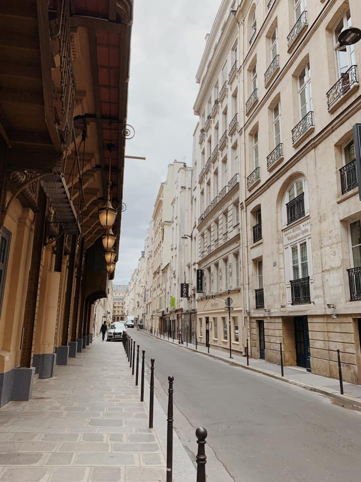
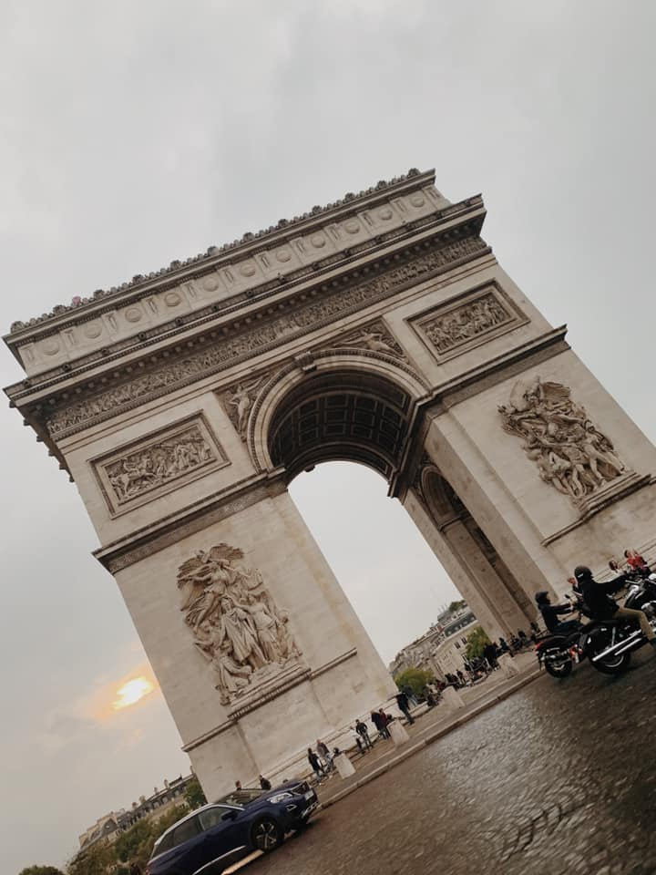
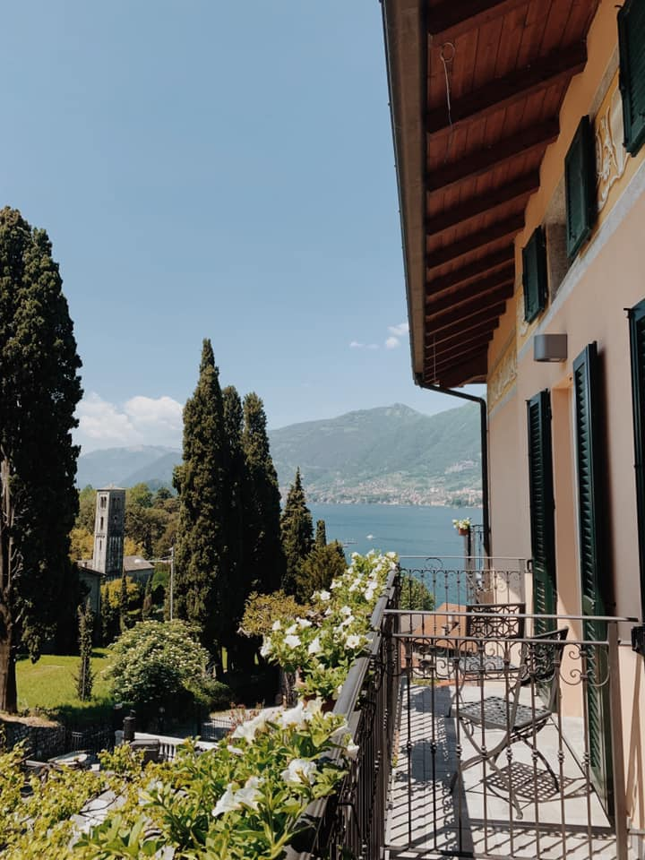
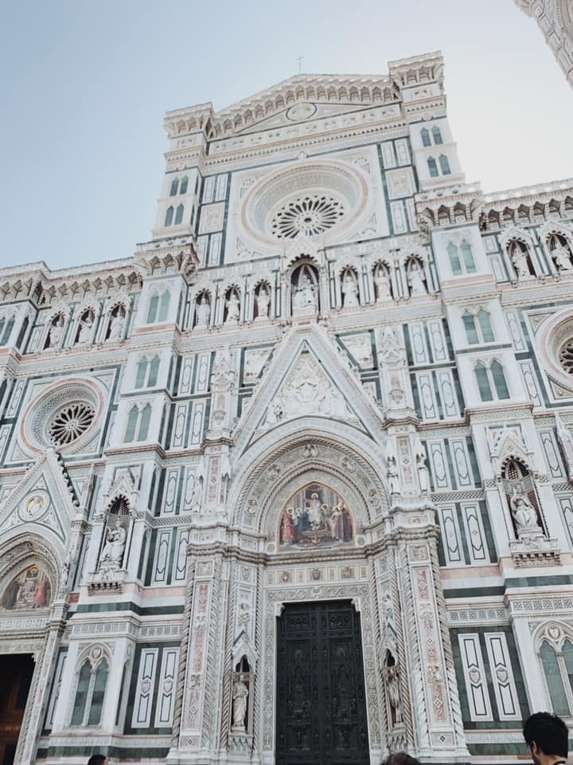
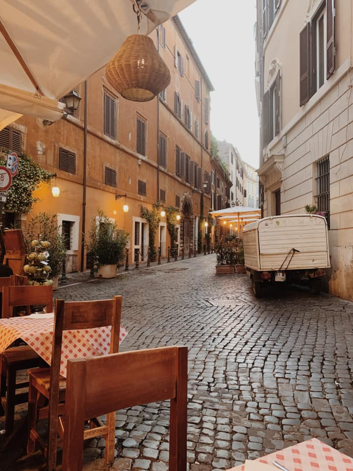
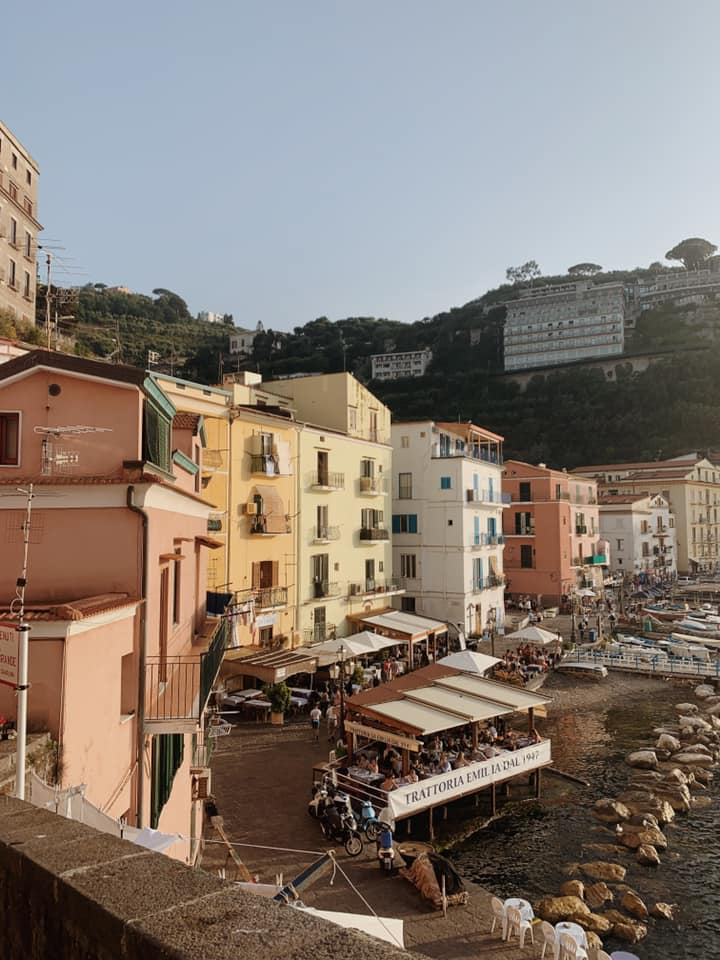
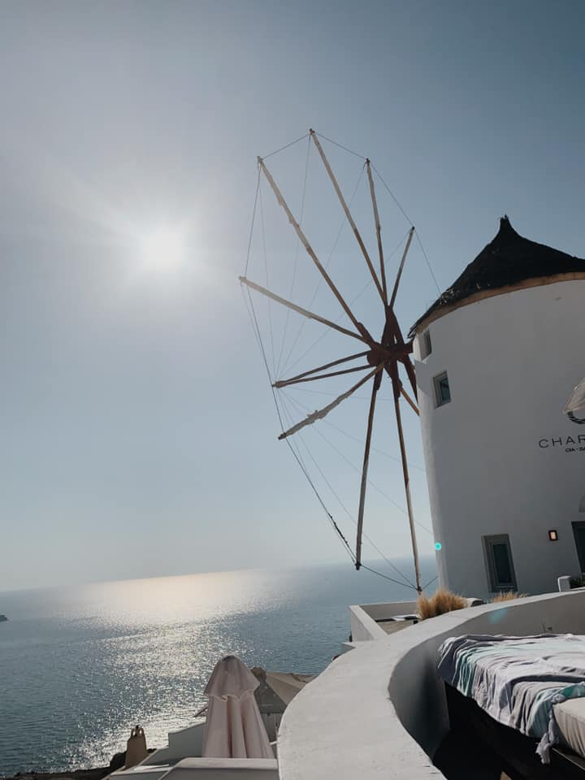
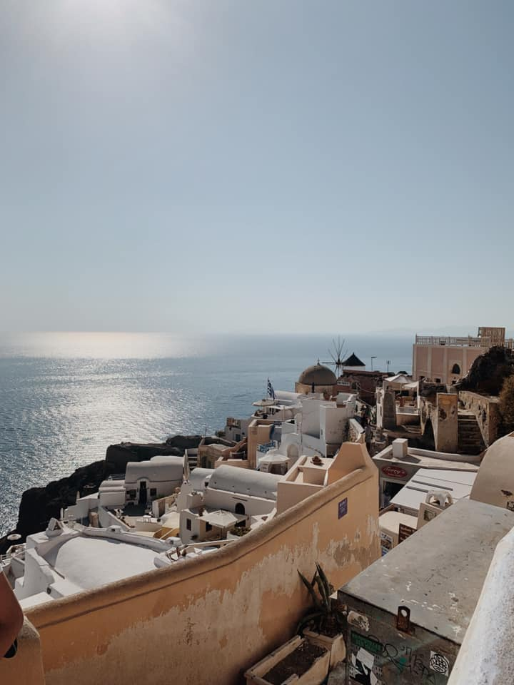

 This is the first picture I took on my abroad journey. This picture is of the streets of Paris, France. Paris was the first place I visited and it was the best place to start this journey. Paris is a magical city.
 This is the Arch de Triumphe, loacted in Paris, France.
 This picture was taken in Como, Italy. This beautiful place is located in northern Italy on the bordere of Italy and Switzerland. Pictures do not do this place justice. The lake is surrounded by mountains with the towns on hills. George Clooney has a vacation home on Lake Comon, so you know its a magical plce.
 This is just part of the beautiful El Duomo Cathedral located in Florence, Italy. It is also known as Santa Maria del Fiore and serves as city's symbol.
 This picture was taken on a side street in Rome, Italy. This was one of the first pictures I took in Rome. My study abraod program was in Rome and this beautiful city became my home for four weeks.
 This picture was taken on Italy's Amalfi Coast in the town of Sorrento. Sorrento is located on clifs, which made the views amazing.
This picture was taken in Santorini's capital city fo Thera. Greece was one of the most beautiful places I have visited.
 This picture was taken in Oía, the northest most city in Santorini. Oía is known for their amazing sunsets.

This picture was also taken in Santorini's capital city of Thera. Thera is exactly what you picture when you think of Greece. If you have ever seen Mamma Mia, this town is exactly that.
This picture is of Nyhaven, a canal located in Copenhagen, Denmark. Copenhagen was the last place I visited during my abroad trip.